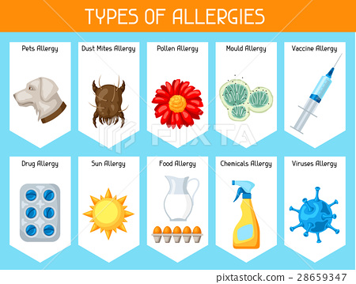
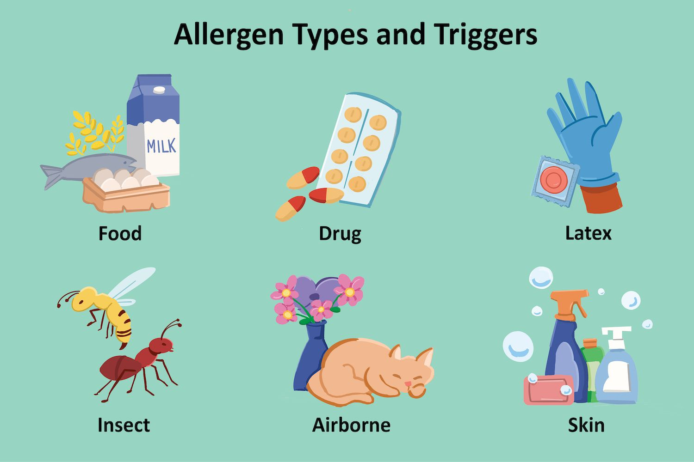
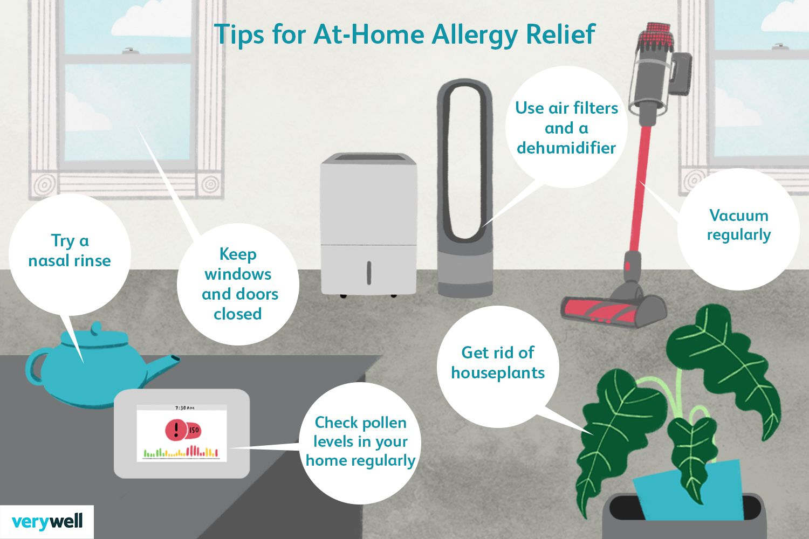
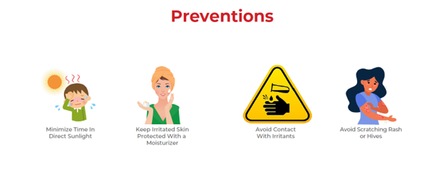

The most common allergens include pollen, dust mites, pet dander, mold spores, certain foods (such as peanuts, tree nuts, shellfish, eggs, milk, wheat, and soy), insect venom, and certain medications.
Allergy Simplified: Managing Symptoms & Triggers for Relief
Dr.Milan Modi
12/05/2023
1. Introduction: Understanding Allergies
Welcome to our comprehensive guide on allergies. Allergies are a common condition that affects millions of people worldwide. In this article, we will simplify the topic of allergies, discussing their types, causes, symptoms, diagnosis, management, and prevention. Whether you're dealing with seasonal allergies or food allergies, this guide aims to provide you with valuable insights and practical tips to help you better understand and navigate the world of allergies.
2. Common Types of Allergies :-
Allergies can manifest in various forms, each with its unique set of symptoms and triggers. Here are some of the most common types of allergies:
- » Seasonal allergies, also known as hay fever or allergic rhinitis, occur when the body reacts to allergens present in the environment during specific seasons. Common triggers include pollen, mold spores, and dust mites. Symptoms may include sneezing, itchy and watery eyes, runny nose, and nasal congestion.
1. Seasonal Allergies
- » Food allergies occur when the immune system reacts adversely to certain proteins found in specific foods. Common food allergens include peanuts, tree nuts, shellfish, eggs, milk, wheat, and soy. Symptoms can range from mild reactions such as hives and itching to severe, life-threatening reactions known as anaphylaxis.
2. Food Allergies
- » Allergic asthma is a type of asthma triggered by allergens such as pollen, dust mites, pet dander, or mold. When exposed to these allergens, the airways become inflamed, leading to symptoms such as wheezing, coughing, shortness of breath, and chest tightness.
3. Allergic Asthma
- » Allergic rhinitis refers to the inflammation of the nasal passages caused by allergens such as pollen, dust mites, or pet dander. It shares symptoms with seasonal allergies, including sneezing, itching, runny nose, and nasal congestion.
4. Allergic Rhinitis
3. Causes and Triggers of Allergies
Understanding the causes and triggers of allergies is essential in managing and preventing allergic reactions. Here are some factors that contribute to the development of allergies :
- » Genetic predisposition plays a role in allergies. If you have a family history of allergies, you are more likely to develop allergies yourself. However, having a genetic predisposition does not guarantee that you will develop allergies.
1. Genetic Factors
- » DEnvironmental factors, such as exposure to allergens during childhood or living in a polluted environment, can increase the risk of developing allergies. Additionally, early-life exposure to certain allergens may influence the development of allergies later in life.
2. Environmental Factors
- » Allergens are substances that trigger allergic reactions in susceptible individuals. Common allergens include pollen, mold spores, dust mites, pet dander, certain foods, insect venom, and certain medications. Identifying and avoiding these allergens is crucial in managing allergies.
3. Use Over-the-Counter Remedies
4. Symptoms of Allergies
Allergies can cause a wide range of symptoms, depending on the type of allergy and individual sensitivity. Here are some common symptoms associated with allergies :-

- » Respiratory symptoms of allergies may include sneezing, coughing, wheezing, shortness of breath, chest tightness, and a runny or stuffy nose. These symptoms are often seen in conditions such as seasonal allergies, allergic asthma, and allergic rhinitis.
1. Respiratory Symptoms
- » Skin symptoms of allergies can manifest as hives (red, itchy bumps on the skin), eczema (dry, itchy, and inflamed skin), or general itching. These symptoms are commonly seen in food allergies and allergic reactions to medications or insect bites.
2. Skin Symptoms
- » Allergies can also affect the digestive system, leading to symptoms such as nausea, vomiting, abdominal pain, diarrhea, or bloating. These symptoms are often associated with food allergies or adverse reactions to certain medications.
3. Digestive Symptoms
5. Diagnosing Allergies
Proper diagnosis is crucial in identifying the specific allergens causing your allergies and developing an effective treatment plan. Here are some common methods used in diagnosing allergies :-
- » Your healthcare provider will begin by taking a detailed medical history, including information about your symptoms, their duration, and any potential triggers. A physical examination may also be conducted to assess any visible signs of allergies, such as skin reactions or nasal congestion.
1. Medical History and Physical Examination
- » Allergy testing involves various methods to identify specific allergens responsible for triggering your allergic reactions. Common tests include skin prick tests, blood tests (such as IgE antibody tests), and patch tests. These tests help determine the presence and severity of allergies, guiding the development of a personalized treatment plan.
2. Allergy Testing
6. Managing Allergies
While allergies cannot be cured, they can be effectively managed to minimize symptoms and improve quality of life. Here are some strategies for managing allergies :-
- » YIdentifying and avoiding allergens is the first line of defense in managing allergies. This may involve taking measures such as keeping windows closed during pollen season, using allergen-proof bedding, regularly cleaning and vacuuming your home, and avoiding foods that trigger allergic reactions.
1. Avoiding Allergens
- » Various medications are available to alleviate allergy symptoms. Over-the-counter options include antihistamines, nasal sprays, and eye drops. For more severe allergies, your healthcare provider may prescribe stronger medications, such as corticosteroids or immunosuppressantsan.
2. Medications for Allergies
- » Immunotherapy, also known as allergy shots, is a long-term treatment option for allergies. It involves regular injections of small amounts of allergens to desensitize the immune system and reduce allergic reactions over time. Immunotherapy is particularly beneficial for individuals with severe allergies or those who do not respond well to other treatments.
3. Immunotherapy
- » Certain lifestyle changes can help manage allergies effectively. These include maintaining good indoor air quality, practicing good hygiene, wearing protective clothing when exposed to allergens, and incorporating a healthy diet to boost the immune system.
4. Lifestyle Changes
7. Allergy Prevention
Preventing allergies, especially in children, is an important goal. While it may not be possible to prevent all allergies, there are steps you can take to reduce the risk or severity of allergic reactions :-
- »Minimizing exposure to allergens can significantly reduce the risk of developing allergies or experiencing allergic reactions. This may involve keeping indoor spaces clean and free from dust, mold, and pet dander, using air purifiers, and avoiding known allergens as much as possible.
1. Reducing Exposure to Allergens
- » Recent research suggests that introducing allergenic foods, such as peanuts or eggs, to infants at an early age (around 4-6 months) may help prevent the development of food allergies. However, it is important to consult with a healthcare professional before introducing potentially allergenic foods to infants, especially if there is a family history of allergies.
2. Early Introduction of Allergenic Foods
Frequently Asked Questions
2. Can allergies develop later in life?
Yes, allergies can develop at any age, even if you have never experienced allergies before. It is possible for individuals to develop allergies later in life due to changes in the immune system or exposure to new allergens.
3. How long do allergy symptoms last?
The duration of allergy symptoms can vary depending on the type of allergy and individual factors. Some symptoms may be short-lived and resolve within a few hours or days, while others may persist for weeks or longer, especially in chronic allergic conditions.
4. Can allergies be cured?
Allergies cannot be cured, but their symptoms can be effectively managed. Treatment options focus on reducing symptoms, avoiding allergens, and controlling allergic reactions to improve quality of life
5. Is there a link between allergies and asthma?
Yes, there is a close association between allergies and asthma. Allergic reactions can trigger asthma symptoms in susceptible individuals, leading to allergic asthma. Managing allergies can help reduce the frequency and severity of asthma attacks.
Conclusion :-
In conclusion, allergies are a common condition that can significantly impact an individual's quality of life. Understanding the different types of allergies, their causes, symptoms, and management strategies is crucial in effectively dealing with allergies. By following proper prevention measures, seeking an accurate diagnosis, and adopting appropriate treatment options, individuals with allergies can lead a healthier and more comfortable life. Remember to consult with a healthcare professional for personalized advice and guidance tailored to your specific allergies.